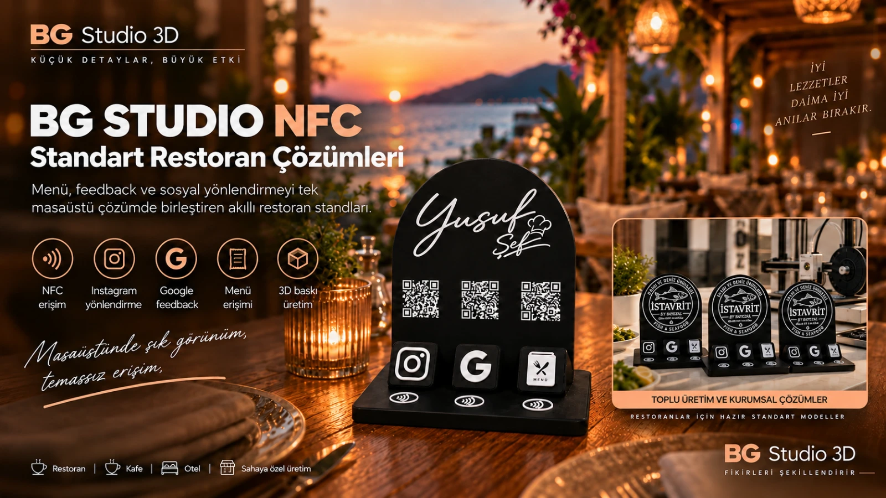
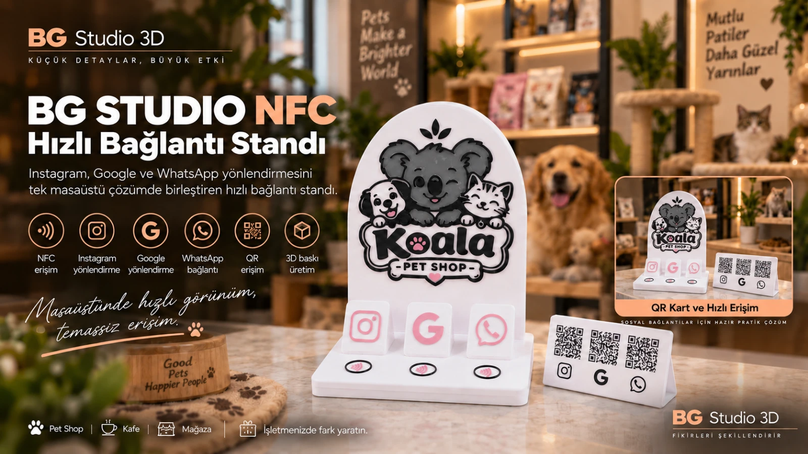
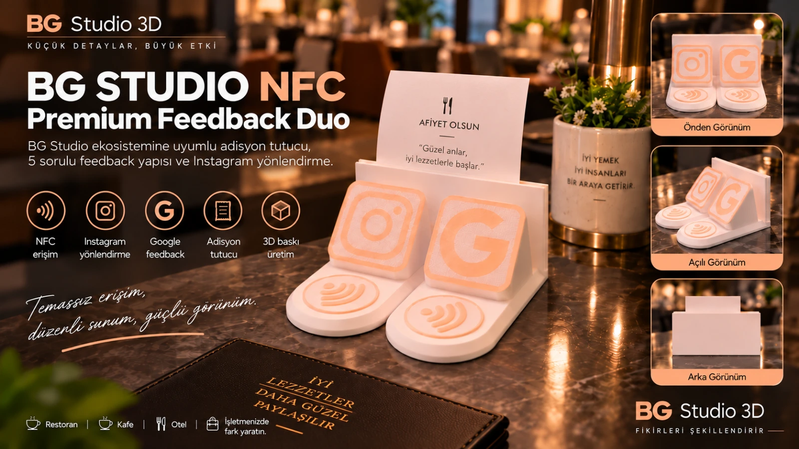
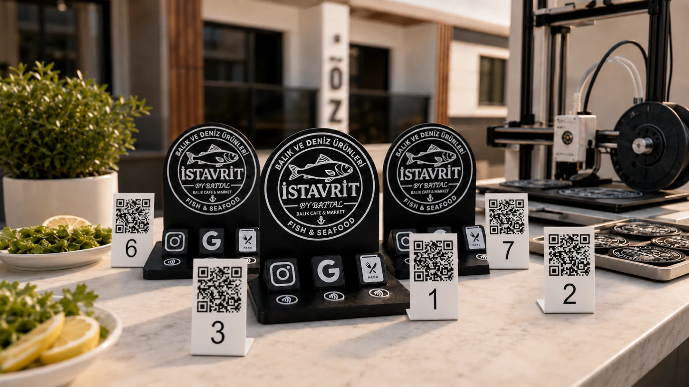
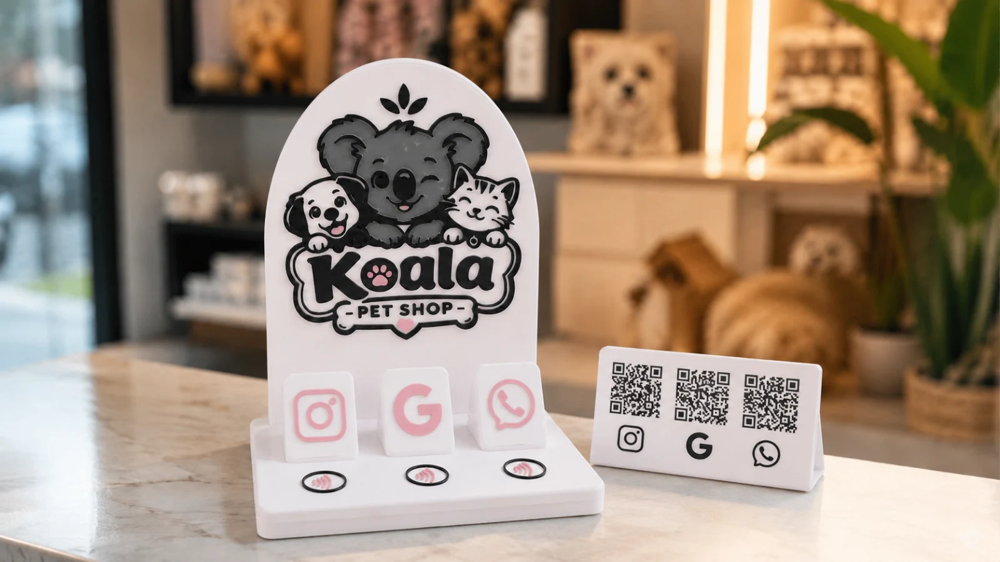
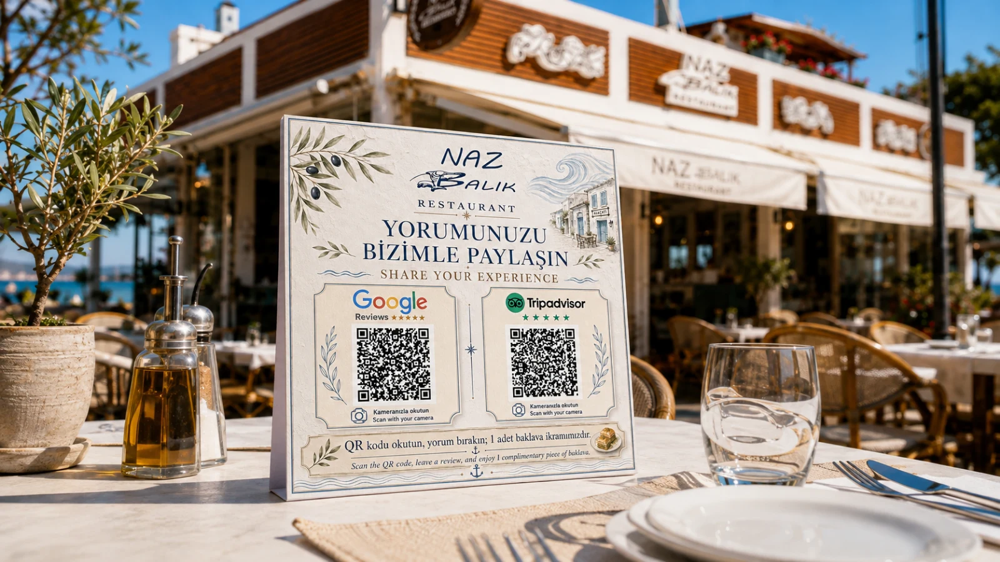
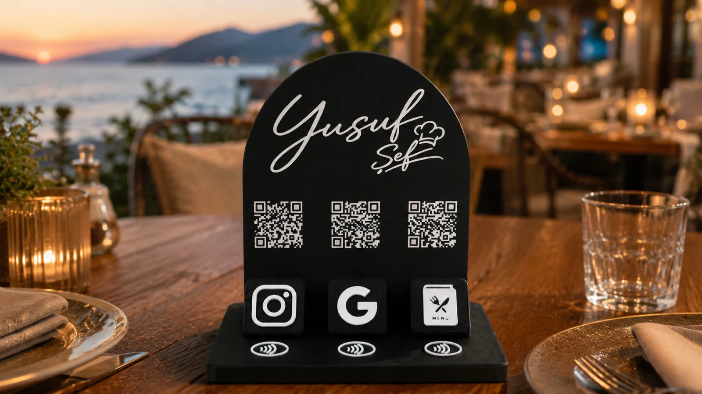
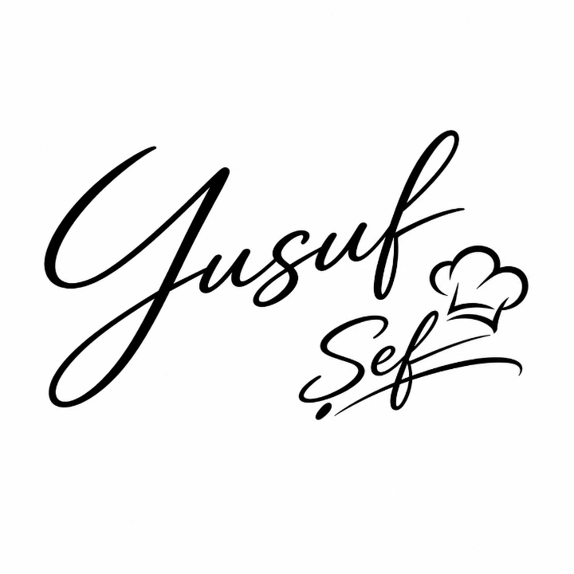

Özel 3D stand
Logo, renk ve kullanım senaryosuna göre tasarlanır ve üretilir.
BG STUDIO NFC İŞLETME PLATFORMU
BG Studio NFC; işletmeye özel fiziksel standları, NFC ve isteğe bağlı QR erişimini, müşteri etkileşimlerini, dijital menüyü, değerlendirme akışını, analitikleri ve yönetim panelini tek altyapıda birleştirir.
NFC veya QR yalnızca erişim katmanıdır. Hedef yönetimi, müşteri akışları, geri bildirim, analitik ve raporlama BG Studio NFC altyapısında devam eder.
Logo, renk ve kullanım senaryosuna göre tasarlanır ve üretilir.
Bağımsız hedeflere veya işletme uygulamasına hızlı erişim sağlar.
Menü, feedback, bildirim, bağlantı ve müşteri akışları yönetilir.
Kullanım ve performans verileri işletme bazında izlenir.
3 ANA İŞLETME ÇÖZÜMÜ
Standart Restoran Sistemleri, Hızlı Bağlantı Standı ve Premium Feedback Duo birbirinin alt paketi değildir. Her biri farklı işletme ihtiyacına göre konumlanır.

01 · STANDART RESTORAN SİSTEMLERİ
Başlangıç, Profesyonel, Premium ve yüksek kapasiteli Özel Restoran Hazır Paketleri. Her masada 3 NFC; Akıllı Menü, panel, analitik ve işletme otomasyonu aynı sistem çekirdeğinde çalışır.

02 · HIZLI BAĞLANTI STANDI
Menü altyapısına ihtiyaç duymayan işletmeler için üç farklı bağlantıyı tek, işletmeye özel stand üzerinde birleştirir.

03 · PREMIUM FEEDBACK DUO
5 sorulu işletme içi feedback, Google değerlendirme devam akışı ve seçilebilir sosyal / iletişim hedefini aynı fiziksel standda birleştirir.
01 · STANDART RESTORAN SİSTEMLERİ
Başlangıç, Profesyonel ve Premium aynı BG Studio NFC sistemini kullanır. Ana fark masa / stand ve NFC kapasitesidir. QR, Menü Tasarımı ve Logo Tasarımı isteğe bağlıdır.
10 masaya kadar restoranlar için BG Studio NFC işletme altyapısı.
15 masalık restoranlar için 45 NFC erişim noktası, dijital menü, panel ve analitik altyapısı.
20 masalık restoranlar için 60 NFC erişim noktası ve BG Studio NFC platformunun tam restoran altyapısı.
ÖZEL RESTORAN HAZIR PAKETLERİ
20 masanın üzerindeki restoranlarda aynı Standart Restoran altyapısı işletmenin kapasitesine göre ölçeklenir. Hazır paket bedeli NFC taban bedelidir; QR, Menü Tasarımı ve Logo Tasarımı seçilirse ayrıca eklenir.
Menü Tasarımı ve Logo Tasarımı seçilirse ayrıca fiyatlandırılır.
120 masa için teklif al02 · BAĞIMSIZ İŞLETME ÇÖZÜMÜ
Menü altyapısına ihtiyaç duymayan işletmeler için üç bağımsız NFC hedefini tek, işletmeye özel tasarım stand üzerinde birleştiren hızlı bağlantı çözümü.
Her NFC alanı ayrı bir bağlantıya yönlendirilebilir ve hedefler uzaktan değiştirilebilir.
Bunlar liste fiyatlarıdır. İşletmeye özel teklif uygulanabilir.
HANGİ ÇÖZÜM?
İkisi de bağımsız işletme çözümüdür. Seçim, doğrudan bağlantı mı yoksa gelişmiş müşteri feedback ve raporlama akışı mı gerektiğine göre yapılır.
HIZLI BAĞLANTI STANDI
PREMIUM FEEDBACK DUO
BG STUDIO NFC YÖNETİM ALTYAPISI
Çözüme göre özellik seti değişse de işletme paneli, uzaktan hedef yönetimi, analitik ve BG Studio yönetim altyapısı fiziksel standları dijital sisteme bağlar.
Kullanım verileri, bildirimler, paket ve sistem durumları tek merkezde takip edilir.
Masa veya stand bazlı NFC / QR etkileşimleri çözüm tipine göre raporlanır.
Bağlantılar ve dijital hedefler fiziksel ürünü yeniden üretmeden yönetilebilir.
Standlar hazır pleksi üstüne etiket yapıştırılan ürünler değildir; tasarım ve 3D üretim işletmeye göre hazırlanır.
Fiyatlar 2026 dönemindeki güncel website fiyat yapısını gösterir. İşletme kapsamı, adet ve özel anlaşmalara göre teklif ayrıca netleştirilebilir.
Kurulan her sistem işletmenin masa sayısı, hedef kanalları ve kullanım senaryosuna göre farklılaşır. Aşağıdaki örnekler sahada uygulanan kurulumlardan seçildi.

 Restoran • Başlangıç Paketi
Restoran • Başlangıç Paketiİstavrit Restaurant için 10 masalık BG Studio NFC Başlangıç Paketi kuruldu. Her masa için özel hazırlanan toplam 10 adet NFC + QR stand, masa bazlı erişim altyapısıyla BG Studio NFC Sistemine bağlandı. Misafirler telefonlarını standa yaklaştırarak veya QR kodu okutarak dijital menüye, Instagram hesabına ve değerlendirme akışına erişebiliyor. Değerlendirme sürecinde misafir önce BG Studio değerlendirme paneline yönlendiriliyor, ardından Google yorum adımına geçebiliyor. İşletme tarafında masa bazlı NFC + QR etkileşimleri, dijital menü erişimleri ve sistem kullanımı BG Studio NFC işletme paneli üzerinden takip ediliyor. Böylece menü, sosyal medya erişimi, müşteri değerlendirmesi ve masa etkileşimleri tek sistem altında yönetiliyor.

 Petshop • Hızlı Bağlantı Standı
Petshop • Hızlı Bağlantı StandıKoala Petshop için BG Studio NFC ürün ailesine ait Hızlı Bağlantı Standı tasarlanıp üretildi. İşletmenin Google, Instagram ve WhatsApp kanalları tek bir fiziksel stand üzerinde bir araya getirildi. Müşteriler NFC erişimi veya stand üzerindeki ayrı QR kodlar üzerinden ilgili dijital kanala hızlıca geçebiliyor. İşletmeye özel tasarlanan stand sayesinde sosyal medya, iletişim ve Google erişimleri masa veya banko üzerinde düzenli, görünür ve tek noktadan ulaşılabilir hale getirildi.

 Restoran • QR Yorum Sistemi
Restoran • QR Yorum SistemiNaz Balık Restaurant’ın 15 masası için Google Reviews ve Tripadvisor yorum yönlendirmesine özel toplam 15 adet masaüstü QR yorum kartı tasarlanıp uygulandı. Her kartta iki platform için ayrı QR yönlendirmeleri kurgulandı ve tasarım restoranın marka kimliğine özel olarak hazırlandı. Misafirlerin masa üzerinden hızlıca Google veya Tripadvisor yorum sayfasına ulaşabildiği bu sistem, fiziksel kart ile dijital değerlendirme akışını tek noktada bir araya getiriyor.


Restoran • Profesyonel PaketYusuf Şef için 15 masalık BG Studio NFC Profesyonel Paket kurulumu gerçekleştirildi. İşletmeye özel hazırlanan 15 adet NFC + QR stand, masa bazlı erişim altyapısıyla BG Studio NFC Sistemine bağlandı. Misafirler NFC veya QR üzerinden Akıllı Menü, Instagram ve değerlendirme akışına erişebiliyor. Akıllı Menü modülünde Türkçe ve İngilizce menü, ürün içerikleri, alerjen bilgileri ve yaklaşık kalori bilgileri sunuluyor. Değerlendirme akışında misafirler önce BG Studio değerlendirme paneline yönlendiriliyor, ardından Google yorum adımına geçebiliyor. İşletme; menü, değerlendirme, sosyal medya ve masa bazlı NFC + QR etkileşimlerini kendisine özel BG Studio NFC işletme paneli üzerinden yönetip takip edebiliyor. Böylece menü, müşteri geri bildirimi, sosyal medya erişimi ve kullanım verileri tek sistem altında toplanıyor.
Sistemi işletmenin mevcut düzenine göre kuruyoruz. NFC ve QR aynı fiziksel deneyimde birbirini tamamlar.
NFC desteği telefon modeline göre değişir. Bu nedenle aynı stand üzerinde QR alternatifi de kullanılarak erişim sürekliliği sağlanabilir.
Fiziksel standın tasarımına ve kurulan sisteme göre dijital hedeflerin yönetimi planlanır. Revizyon ihtiyacı kurulum kapsamına göre değerlendirilir.
Evet. Masa bazlı menü veya takip senaryolarında her masa için ayrı QR akışı kurgulanabilir.
Hayır. Google yorum, Instagram, WhatsApp ve işletmenin ihtiyaç duyduğu farklı dijital hedefler için de kullanılabilir.